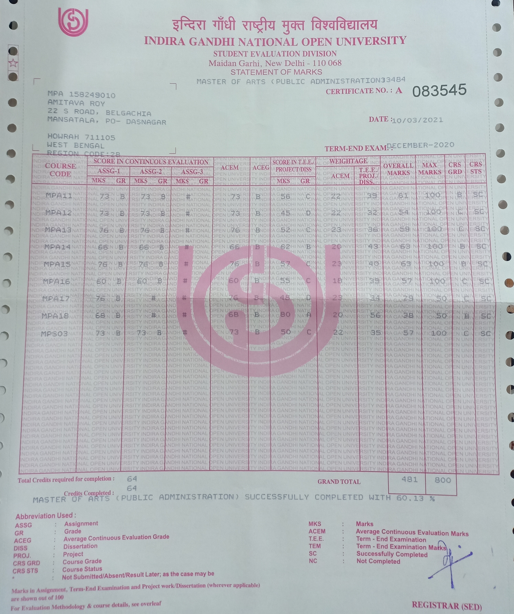
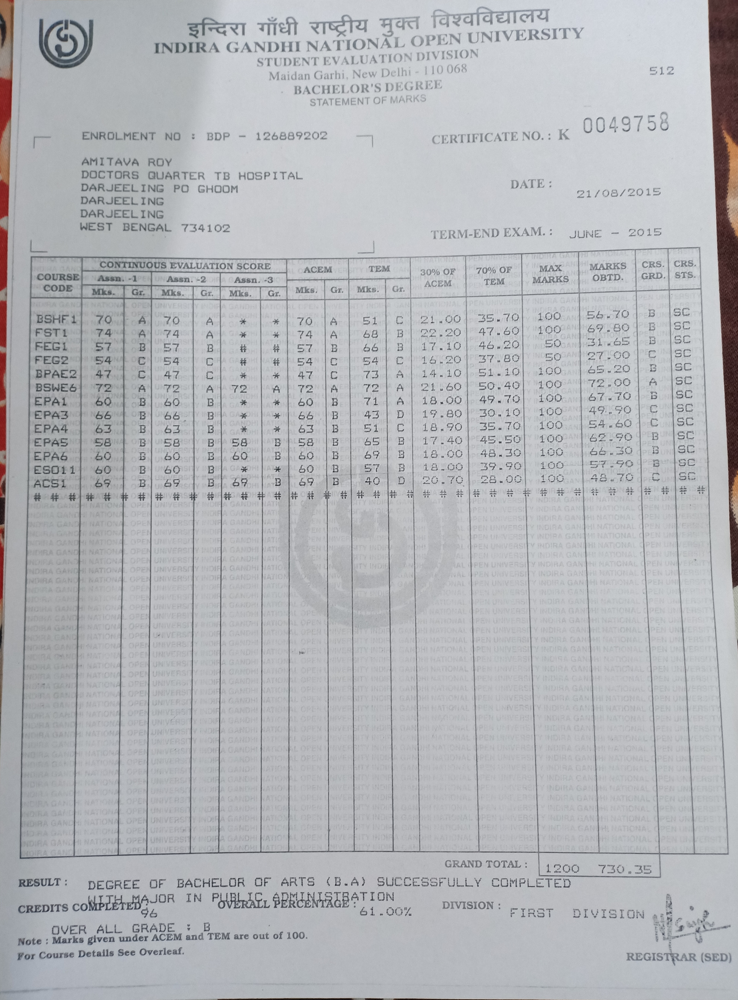
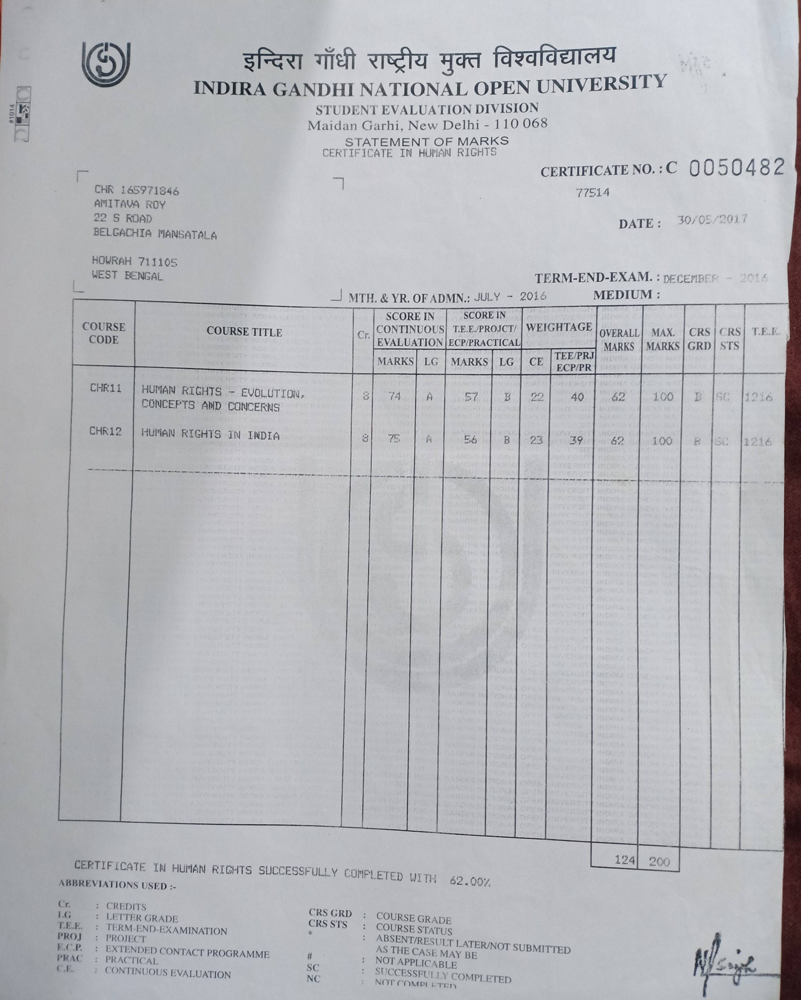

Educational Qualifications
PUBLIC ADMINISTRATION

Masters in Public Administration
from
IGNOU with
1st Division
State, Society and Public Administration:61%
Administrative Theory:54%
Public Systems Management:59%
Human Resource Management:63%
Public Policy and Analysis:63%
Decentralization and Local Governance:57%
Electronic Governance:58%
Disaster Management:76%
India: Democracy and Development:57%

Bachelors(Major) in Public Administration
from
IGNOU with
1st Division
Administrative Theory:67.70%
Indian Administration:65.20%
Development Administration:49.90%
Personnel Administration:54.60%
Financial Administration:62.90%
Public Policy:66.30%
Substance Abuse and Counselling:72.00%
The Study of Society:57.90%
Application Oriented Course in Consumer Studies:48.70%
Foundation Course in Science and Technology:69.80%
Foundation Course in Humanities and Social Sciences:56.70%
Foundation Course in English:58.65%
Certificate in Human Rights

Certificate in Human Rights
from
IGNOU with
1st Division
Human Rights-Evolution, Concepts and Concerns: 62%
- Understanding Human Rights: Universal Declaration, Civil and Political Rights, Economic Social and Cultural Rights
- Specific Human Rights: Right to Self-Determination, Right to Development: Food, Shelter and Health
- Human Rights of Groups: Women, Child, Minorities, Migrant Workers, Indigenous People
- Human Rights: Implementation: UN, Regional Arrangements, National Instructions and Laws, NGOs
- Human Rights Concerns and Emerging Trends: Humanitarian Law, Vienna and Other Conferences, Terrorism and Fundamentalism, Challenges of Globalization
Human Rights in India: 62%
- Human Rights: Development in India: Historical Traditions, Freedom Struggle and Civil Liberties Movement, Fundamental Rights and Directive Principles of State Policy, India's International Human Rights Obligations
- Rights of Special Categories: Women, Children, Dalits and Tribes, Minorities, Old and Disabled
- Human Rights Enforcement: Role of Judiciary, National State and Other Commissions, Human Rights Movement
- Human Rights: Threats and Challenges: State and Society, Terrorism and Fundamentalism, Human Rights Environment, Media Internet and Globalization
- Human Rights in Everyday Life: Human Rights and Police, Consumer Rights and Protection, Accessing Rights of Women and Children, Rights of Dalits Tribals and Unorganized Labour